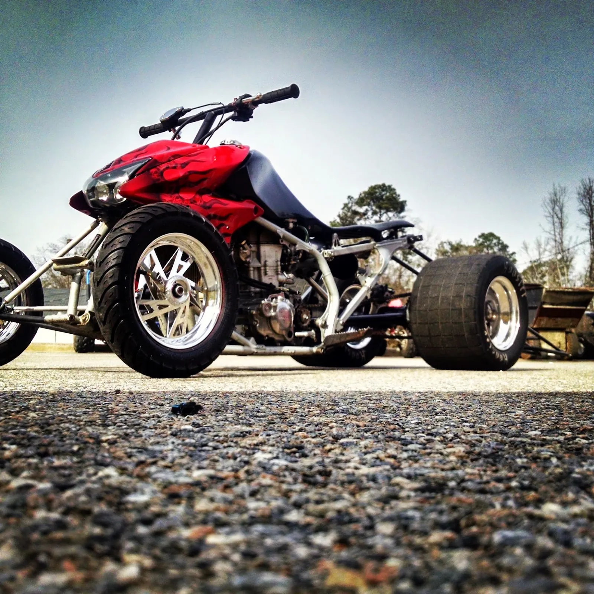
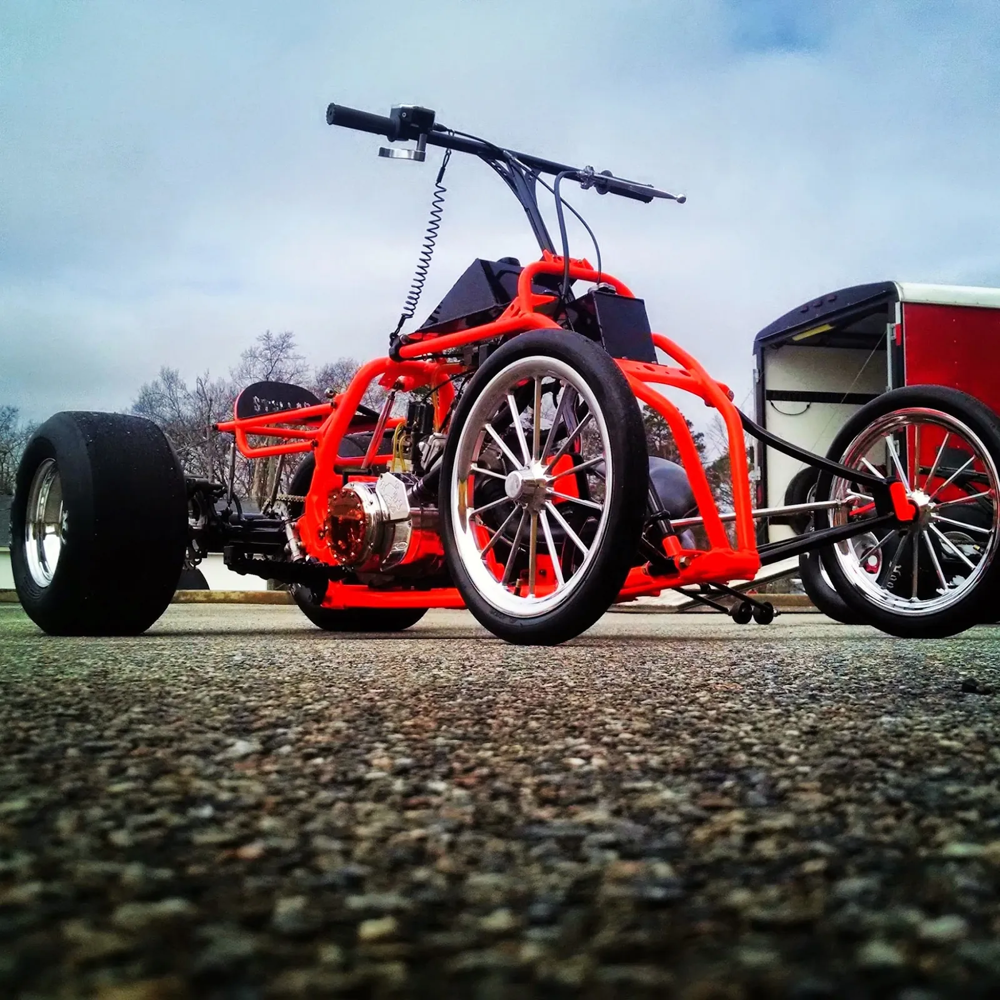
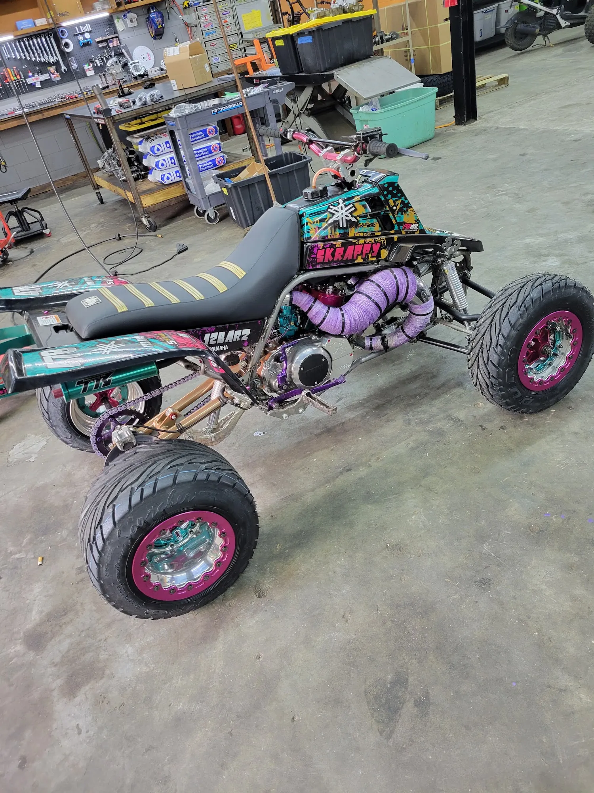

“Mitch and his team are awesome, they do not cut corners and they get it done right the first time. 5star is the ONLY place to take your toys for maintenance or fixing or upgrades. I drive 4 hours to take my stuff to them because they do such a great job! Have been a customer for 4 years and will be for life!”

Reviews
4.9 stars. 169 reviews.
What riders say about 5 Star Small Engines on Google, with five-star reviews quoted word for word.

4.9
169 Google reviews · 161 of them five stars
dyno tuningsmall engine repairintermittent bog diagnosisquad tuningbike tuningreliable staffquality partseasy processcleanlinessworkmanship
Rating, counts and review topics as shown on the Google Business Profile, November 2026.
In their words
Straight from Google
Every review below is a five-star Google review, copied exactly as written.
“Hands down greatest shop with zero complaints. Customer service was great throughout the diagnosis, and even took the time to help me with understanding preventative maintenance I can do to stop future problems. Very knowledgeable and no complaints on my end. Happy to be a repeat customer in the future.”
“Mitch went above and beyond and I really appreciate him. I took my LTR450 in to be dyno tuned today. It was a 3 hr drive and well worth it. Even when he wasn't able to tune it because the bike had a problem i was unfamiliar with; he fixed the problem and then clean her up and she is riding wonderfully. Very knowledgeable and helpful!!”
“Took my TRX450ER to Byron Powersports and got the run around for months. Part swap after part swap with no results. Finally got tired of it and took it to Mitch at 5 Star. He had it repaired in short order, honestly and transparent. Highly recommend.”
“I have nothing but great things to say about these guys ive been dumping money into my bike time after time only to be disappointed but I finally found someone that can work on carburetor's and tune is perfect i appreciate the great work Mitch and his team......”
“Mitch & his team are the guys you want to go to for all of your atv work! They are well advanced in other areas also but if you’re looking for a trusted shop to take your machine to I highly recommend checking these guys out.!!”
“Guys got me in quick. 3 employees knocked out raptor. Pipe / power commander / dyno all within couple hours. They know their stuff. Finding a good clean shop is very hard to find. These guys are your answer”
“5 Star has repaired and serviced multiple things for us, 4 wheeler, golf cart and jet ski and always do a great job. I've also referred friends and family who have used others and needed to find a better service and they're so thankful I got them to Mitch and 5Star, they always do it right the first time😁 …”

Lizella · Macon area
Join the five-star crowd.
Get your machine on the schedule and see what the reviews are talking about.